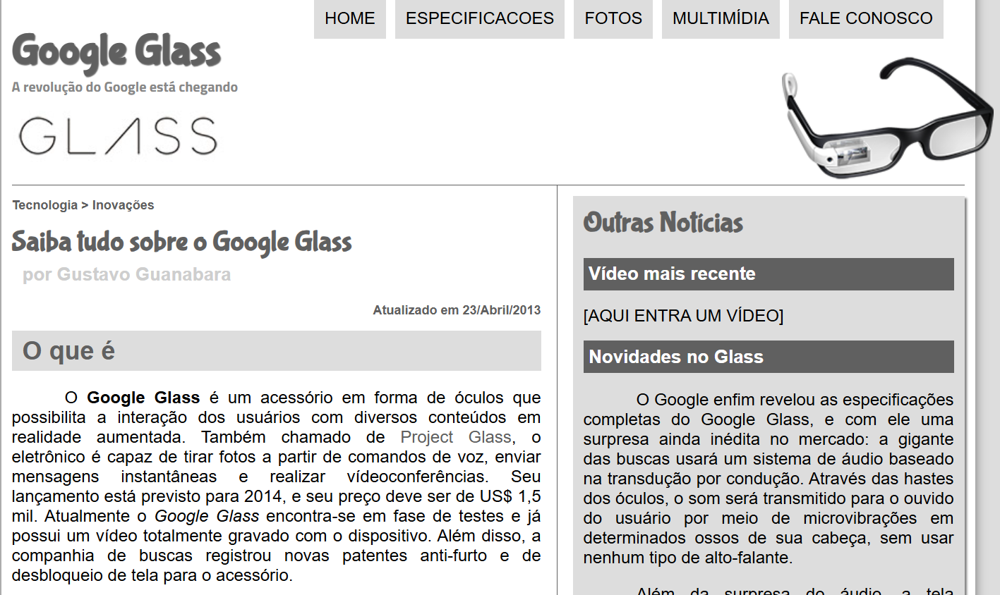
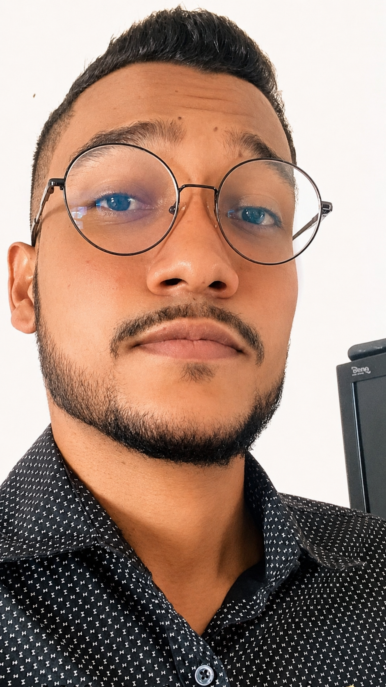
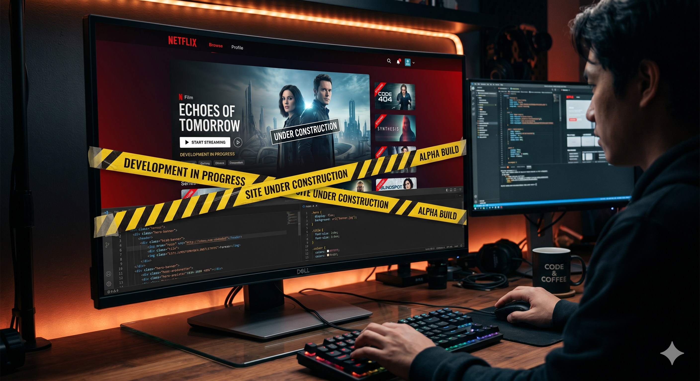
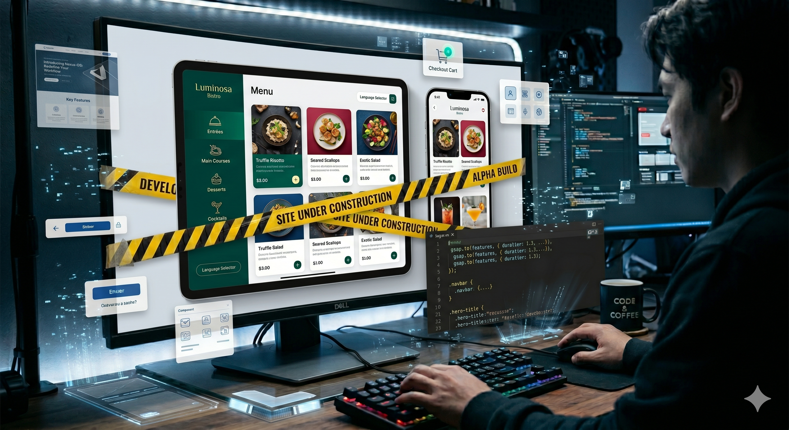

Google Glass
Site informativo sobre o Google Glass
Marcos Vinicius
de Oliveira
Apaixonado por criar experiências web modernas,
Responsivas e intuitivas

Atualmente tenho 26 anos, sou casado e atuo como Monitor de Qualidade em uma empresa de call center. Durante minha trajetória profissional, desenvolvi habilidades como comunicação, análise de processos, resolução de problemas e trabalho em equipe, competências que contribuem diretamente para minha evolução profissional e pessoal. Sou apaixonado por tecnologia e desenvolvimento, com o objetivo de construir minha carreira na área da programação e me tornar um desenvolvedor. Estou sempre buscando aprender novas tecnologias, aprimorar meus conhecimentos e desenvolver soluções modernas, funcionais e criativas através da programação. Este portfólio tem como objetivo apresentar minhas habilidades, conhecimentos e projetos desenvolvidos durante minha trajetória acadêmica e profissional, demonstrando minha dedicação ao aprendizado contínuo e ao crescimento na área da tecnologia.



Site informativo sobre o Google Glass

Clone da página inicial da Netflix com HTML e CSS
Em desenvolvimento
Cardápio online com cards de produtos e categorias
Em desenvolvimentoProjeto desenvolvido durante aula prática
Vamos conversar? Entre em contato por qualquer canal abaixo.